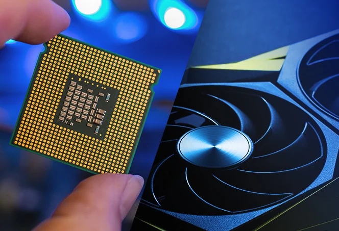

De CPU is het brein van een computer. Het voert alle opdrachten uit die nodig zijn voor programma's om te werken. Het krijgt daarbij gegevens van het geheugen en verwerkt ze. De CPU heeft verschillende belangrijke onderdelen die samenwerken om taken uit te voeren: de ALU, CU en het chachegeheugen.
De ALU staat voor Arithmetic Logic Unit en voert alle rekenkundige en logische bewerkingen uit, zoals optellen en vergelijken. De CU staat voor Control Unit en stuurt de uitvoering van instructies en zorgt ervoor dat alles in de juiste volgorde gebeurt.
Het chachegeheugen helpt om veelgebruikte gegevens snel toegankelijk te maken voor de CPU, zodat hij niet steeds hoeft te zoeken.
De "hersenen" van de CPU worden de cores genoemd. Tegenwoordig hebben de meeste CPU's meerdere cores, vroeger was dat maar één core. Meerdere cores betekent dat de CPU meerdere taken tegelijk kan uitvoeren, wat zorgt voor een hogere snelheid.
De kloksnelheid geeft aan hoe snel de CPU werkt, gemeten in gigahertz (GHz). Hierbij wordt gemeten hoeveel opdrachten een CPU per seconde kan uitvoeren. Een hogere kloksnelheid betekent meestal dat de CPU sneller instructies kan verwerken. De kloksnelheid hangt af van het aantal cores en de efficiëntie.
